谈到最X的数学公式（X处一般可以随意填），人们一般都会谈到欧拉关于复数指数的一个恒等式：
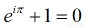
因为这个公式联系了世界上五个最重要的数字：表示什么都没有的0，表示一个的1，圆周率的π，自然对数的底e和虚数单位i，这个公式如此的简洁，但是在数学中又如此的重要，凡是学习了欧拉公式的人无不惊叹于欧拉深邃的思想。
为了了解它，首先我们要从“数系”的拓展开始。
自然数
在人们的生产和生活过程中，逐渐对数字产生了需求。人们为了给牛羊等牲畜计数，产生了自然数的概念。自然数就是全体正整数，也就是一个集合{1,2,3,4…} （有些教材把0也归类为自然数）。
自然数集合对加法是封闭的。所谓封闭，就是说如果A和B都是自然数，那么A+B也是自然数。例如2+3=5，4+6=10。 但是，自然数对减法不是封闭的，也就是说，如果A和B都是自然数，A-B不一定是自然数。例如3-2=1还是自然数，但是5-8=-3就不是自然数了。
整数
也许曾经有一段时间，人们认为5-8是没有意义的。就好像“我一共有5只羊，但是却要杀8只羊招待客人，还剩下几只羊？”这种问题根本不会发生。
但实际上，只要我们去别人家借三只羊就可以满足要求，此时我们拥有的羊就变成了负债3只。也就是-3的含义。所以，人们又发明了0 和负整数。正整数，零和负整数合成了整数集合{……-4,-3,-2,-1,0,1,2,3,4……}
整数对加减法都是封闭的，对乘法也是封闭的，但是对除法就不封闭了。也就是说，如果A和B都是整数，A÷B就不一定是整数。例如4÷2=2是整数，但是3÷2=1.5就不是整数。
有理数
为了解决除法封闭性的问题，人们发明了分数。在4000年前，古埃及人和古希腊人就在使用分数了。公元前5世纪，古希腊数学家毕达哥拉斯将整数和分数合在一起，提出了有理数的概念。
所谓有理数，就是可以写成两个整数的比的数。写作集合就是
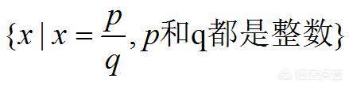
这样一来，有理数的加、减、乘、除（分母不能为零）就都封闭了。
毕达哥拉斯等人沉醉于自己的成就，他们认为所有的数字都是有理数。但是很快，学派内部的学者希帕索斯就发现了问题：如果一个直角三角形的两个直角边都是1，那么斜边无法用两个整数的比来表示。并由此引发了第一次数学危机。
这个问题在于，有理数对于开方运算是不封闭的，例如：√4=2是有理数，但是√2就不是有理数。
实数
人们经过长期的研究，终于发现不仅有可以表示成两个整数的比的有理数，还有不能表示成整数比的无限不循环小数：无理数。人们把有理数和无理数合在一起，称为实数。实数与数轴上的点一一对应。
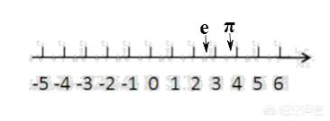
在数轴上，我们不仅能找到整数1、2、3…，还能找到分数2/3，也能找到e、π、√2等无理数。
但是，数系并没有到此结束。因为人们发现√-1还是无法在实数范围内找到答案。也许有人会说：这个数本身就不存在啊！任何一个数的平方都一定是非负的，所以怎么会有一个数字的平方等于-1呢？
复数
数学家们并不这样认为。他们觉得这个数字就好像5-8一样，在某个时刻就会找到它的用处。的确，现在的物理学和数学中，这个数字的作用非常大。这就是虚数。
人们定义虚数单位i的含义是i=√-1，也就是说：
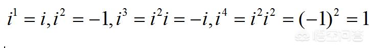
i每4次幂循环一次。我们按照这个规律可以计算出i的2018次幂等于-1。
实数和虚数可以合在一起，就构成了复数：形如a+bi的数字，其中a和b都是实数，而i是虚数单位。
复数可以用复平面上的一个点（或者一个有向线段）表示。
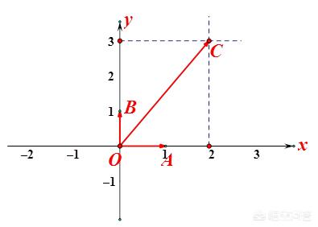
复平面是由实轴（OX轴）和虚轴（OY轴）构成的平面。实轴就是实数轴，上面的每一个点表示一个实数，例如A点就表示1。虚轴是一个少了原点的数轴，每一个点表示一个虚数，例如B点就表示i。那么平面上的C点在实轴上投影为2，在虚轴上投影为3，所以C点表示的复数就是2+3i.
复数的加减乘除规则与实数非常类似。例如：
A=1+i， B=2+3i， 则
A+B=3+4i； A-B=-1-2i，A×B=（2-3）+（2+3）i=-1+5i等。
显然，复数内的加减乘除（分母不为零）都是封闭的，而且复数的实数次幂也是复数。
不过，问题也接踵而至：一个数的复数次幂是什么？
欧拉公式
一个整数的有理数幂很简单
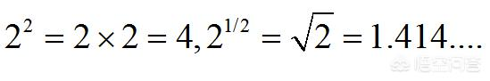
对于无理数幂，例如2的π次幂，我们总可以用两个有理数去逼近，也就是说我们知道
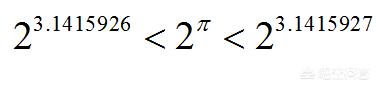
只要我们愿意，总可以把精度无限提高，这样无理数幂次的含义也被我们弄清楚了。
可是，2的i次幂到底是什么？人们仿佛毫无头绪。直到欧拉出现了。欧拉提出了著名的欧拉公式：
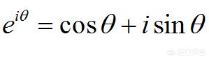
其中θ是一个实数，e是自然对数的底2.71828…
利用这个公式，我们就可以计算一个数的复数次幂了。例如：
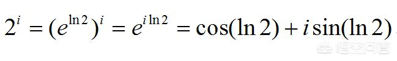
其中ln2表示以e为底2的对数，它是一个实数。
有了这个公式，复数在乘方上也封闭起来了。而且，如果我们令θ=π代入公式，就会得到
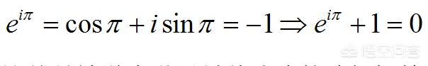
这就是被誉为世界最美公式的欧拉恒等式。
欧拉公式的证明和应用
欧拉公式有许多证明方法，比如可以使用泰勒展开。
泰勒展开公式是说：一个光滑的函数可以展开成一系列函数的形式。例如e^x、cosx和sinx可以分别展开成下列形式：
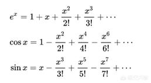
我们把x=iθ代入上述公式，就可以发现欧拉公式的左右两边相等。此外还有求导、积分等方法。
使用欧拉公式可以解决非常多的问题，尤其在实变函数和物理中电学问题里，经常会把一个三角函数写作复数形式进行求解。没有欧拉，我们很难解决交流电中的许多计算，也难以实现大规模的电气化。
顺便一说，1783年，76岁的欧拉在一起和家人聚餐，在陪孙子玩的时候他突然停下，对大家说：我死了。然后就与世长辞了。欧拉用自己的生命证明了：一个真正的数学家是没有什么不能预测的。
1、雅各布线:纵使改变,依然故我
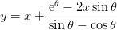

关于雅各布线，最为人们津津乐道的轶事之一，是雅各布醉心于研究对数螺线，这项研究从1691年就开始了。他发现，对数螺线经过各种变换后仍然是对数螺线，如它的渐屈线和渐伸线是对数螺线，自极点至切线的垂足的轨迹，以极点为发光点经对数螺线反射后得到的反射线，以及与所有这些反射线相切的曲线（回光线）都是对数螺线。他惊叹这种曲线的神奇，竟在遗嘱里要求后人将对数螺线刻在自己的墓碑上，并附以颂词“纵然变化，依然故我”，用以象征死后永生不朽。
2、阿基米德线
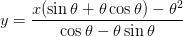
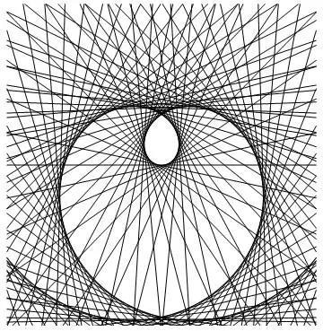
据说，阿基米德螺线最初是由阿基米德的老师柯农(欧几里德的弟子)发现的。柯农死后，阿基米德继续研究，又发现许多重要性质，因而这种螺线就以阿基米德的名字命名了。
3、圆线
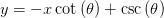
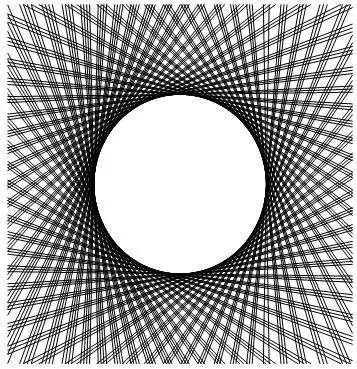
关于圆线的公式，这里就不说了。
4、心形线
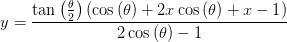
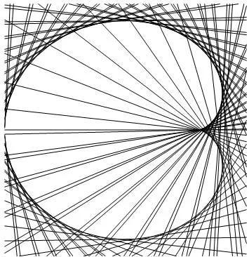
法国数学家笛卡尔在1649年欧洲大陆爆发黑死病时流浪到瑞典，在斯德哥尔摩的街头，52岁的笛卡尔邂逅了18岁的瑞典公主克里斯汀。几天后，他意外的接到通知，国王聘请他做小公主的数学老师。跟随前来通知的侍卫一起来到皇宫，他见到了在街头偶遇的女孩子。从此，他当上了小公主的数学老师。
小公主的数学在笛卡尔的悉心指导下突飞猛进，笛卡尔向她介绍了自己研究的新领域——直角坐标系。每天形影不离的相处使他们彼此产生爱慕之心，公主的父亲国王知道了后勃然大怒，下令将笛卡尔处死，小公主克里斯汀苦苦哀求后，国王将其流放回法国，克里斯汀公主也被父亲软禁起来。
笛卡尔回法国后不久便染上重病，他日日给公主写信，因被国王拦截，克里斯汀一直没收到笛卡尔的信。笛卡尔在给克里斯汀寄出第十三封信后就气绝身亡了，这第十三封信内容只有短短的一个公式：r=a(1-sinθ）。
国王看不懂，觉得他们俩之间并不是总是说情话的，将全城的数学家召集到皇宫，但没有一个人能解开，他不忍心看着心爱的女儿整日闷闷不乐，就把这封信交给一直闷闷不乐的克里斯汀。
公主看到后，立即明了恋人的意图，她马上着手把方程的图形画出来，一颗心形图案出现在眼前，克里斯汀不禁流下感动的泪水，这条曲线就是著名的“心形线”。
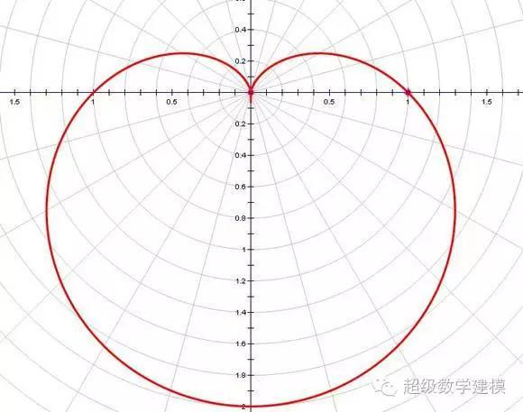
国王死后，克里斯汀登基，立即派人在欧洲四处寻找心上人，无奈斯人已故，先她一步走了，徒留她孤零零在人间......据说这封享誉世界的另类情书还保存在欧洲笛卡尔的纪念馆里。
虽然这个故事是假的。。。
5、玫瑰线
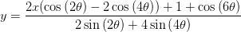
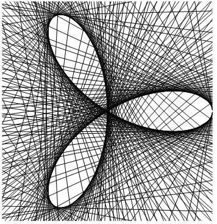
玫瑰线的说法源于欧洲海图。在中世纪的 航海地图上，并没有 经纬线，有的只是一些从中心有序地向外辐射的互相交叉的直线方向线。此线也称罗盘线， 希腊神话里的各路风神被精心描绘在这些线上，作为方向的记号。所以，哥伦布探险队中的西班牙水手想到方向的时候，并不是罗盘方位上的多少度，而是风（losvientos）。而葡萄牙水手则称他们的罗盘盘面为风的玫瑰（rosedosventor）。水手们根据太阳的位置估计风向，再与“ 风玫瑰”对比找出航向。玫瑰线，即指引方向的线。
6、线性方程
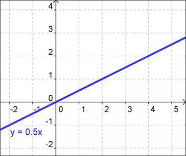
大道至简，化繁为简！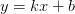线性方程事实上是人类最喜欢的含未知数的公式，因为其中之包含乘法与加法，简单地不可挑剔。